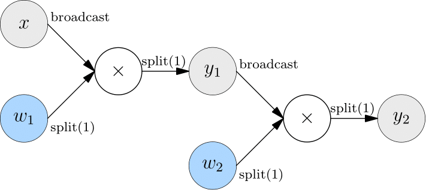
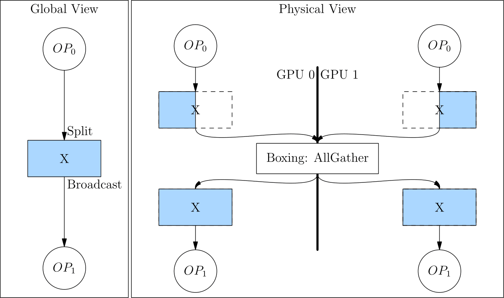

GLOBAL TENSOR¶
The Mapping Between Global View and Physical View¶
Create Global Tensor¶
To interactively experience global tensor on a two-GPU machine, you can launch python separately in two consoles in the following way.
Note
Click the Terminal 0 or Terminal 1 label to check the commands/code
export MASTER_ADDR=127.0.0.1 MASTER_PORT=17789 WORLD_SIZE=2 RANK=0 LOCAL_RANK=0
python3
export MASTER_ADDR=127.0.0.1 MASTER_PORT=17789 WORLD_SIZE=2 RANK=1 LOCAL_RANK=1
python3
Setting environment variables prepares the machines for distributed computing. Please refer to the Extended Reading section at the end of this article for a detailed explanation and ways to launch distributed computing using provided tools.
Create Global Tensor Directly¶
In each of the two consoles, import oneflow and create x.
flow.placement("cuda", [0,1]) specifies the device to place the global tensors.
"cuda"means "on GPU".- The second parameter of
placementis a dictionary. Itskeyis the index of machine, and itsvalueis the index of the graphic cards. Therefore,{0:[0,1]}means that the global tensor is on the 0th, 1st graphic cards of the 0th machine.
import oneflow as flow
placement = flow.placement("cuda", [0,1])
sbp = flow.sbp.split(0)
x = flow.randn(4,5,placement=placement, sbp=sbp)
x.shape
import oneflow as flow
placement = flow.placement("cuda", [0,1])
sbp = flow.sbp.split(0)
x = flow.randn(4,5,placement=placement, sbp=sbp)
x.shape
Output:
flow.Size([4, 5])
flow.Size([4, 5])
Get Local Tensor from Global Tensor¶
Call to_local to check the local tensor on a device.
x.to_local()
tensor([[ 2.9186e-01, -3.9442e-01, 4.7072e-04, -3.2216e-01, 1.7788e-01],
[-4.5284e-01, 1.2361e-01, -3.5962e-01, 2.6651e-01, 1.2951e+00]],
device='cuda:0', dtype=oneflow.float32)
x.to_local()
tensor([[-0.4363, 0.9985, -2.5387, 0.3003, 0.3803],
[ 0.0556, -0.8077, 1.1191, -2.1278, 0.1468]], device='cuda:1',
dtype=oneflow.float32)
Convert Local Tensor to Global Tensor¶
Developers can create local tensor first, then convert it to global tensor with Tensor.to_global.
Two local tensors with the shape of (2,5) are created separately on two devices. While after the to_global method, the global tensor with a shape of (4,5) is obtained.
The reason for this transformation lies in that by setting the sbp with sbp=flow.sbp.split(0), the two local tensors with the shape of (2, 5) are concatenated on the 0th dimension.
import oneflow as flow
x = flow.randn(2,5)
placement = flow.placement("cuda", [0,1])
sbp = flow.sbp.split(0)
x_global = x.to_global(placement=placement, sbp=sbp)
x_global.shape
import oneflow as flow
x = flow.randn(2,5)
placement = flow.placement("cuda", [0,1])
sbp = flow.sbp.split(0)
x_global = x.to_global(placement=placement, sbp=sbp)
x_global.shape
Practice with SBP Signature¶
Data Parallelism¶
The following code is an example of data parallelism of common distributed strategy

import oneflow as flow
placement = flow.placement("cuda", [0,1])
x = flow.randn(4,5,placement=placement, sbp=flow.sbp.split(0))
w = flow.randn(5,8,placement=placement, sbp=flow.sbp.broadcast)
y = flow.matmul(x,w)
y.sbp
y.shape
import oneflow as flow
placement = flow.placement("cuda", [0,1])
x = flow.randn(4,5,placement=placement, sbp=flow.sbp.split(0))
w = flow.randn(5,8,placement=placement, sbp=flow.sbp.broadcast)
y = flow.matmul(x,w)
y.sbp
y.shape
flow.matmul supports many SBP signatures of inputs. When the SBP of x and w are split(0) and broadcast respectively, the SBP of output y is split(0) with logical shape of (4, 8). Output:
(oneflow.sbp.split(dim=0),)
flow.Size([4, 8])
(oneflow.sbp.split(dim=0),)
flow.Size([4, 8])
Model Parallelism¶
The following code is an example of model parallelism of common distributed strategy.

import oneflow as flow
placement = flow.placement("cuda", [0,1])
x = flow.randn(4,5,placement=placement, sbp=flow.sbp.broadcast)
w = flow.randn(5,8,placement=placement, sbp=flow.sbp.split(1))
y = flow.matmul(x,w)
y.sbp
y.shape
import oneflow as flow
placement = flow.placement("cuda", [0,1])
x = flow.randn(4,5,placement=placement, sbp=flow.sbp.broadcast)
w = flow.randn(5,8,placement=placement, sbp=flow.sbp.split(1))
y = flow.matmul(x,w)
y.sbp
y.shape
flow.matmul supports many SBP signatures of inputs. When the SBP of x and w are broadcast and split(0) respectively, the SBP of output y is split(1) with logical shape of (4, 8). Output:
(oneflow.sbp.split(axis=1),)
flow.Size([4, 8])
(oneflow.sbp.split(axis=1),)
flow.Size([4, 8])
Extended Reading¶
Environment Variables in Multi-Machine Training¶
As in the examples shown above, developers can manually launch the distributed training by setting the environment variables. In this way, developers can clearly see the effects and outputs in an interactive Python environment which is friendly for debugging.
In production practice, developers can instead launch the distributed training with oneflow.distributed.launch. This module automatically sets necessary environment variables based on command-line arguments.
MASTER_ADDR: The IP address of the 0th machine in the clusterMASTER_PORT: The listening port of the 0th machine in a multi-machine case. Note that this port should not be occupied by another processWORLD_SIZE: The number of computing devices in the whole cluster. Since there is currently no support for different numbers of GPUs on each machine, the number ofWORLD_SIZEis actually \(number\:of\:machines \times number\:of\:GPUs\:on\:one\:machine\). In our example, we have one machine and two GPUs on it, soWORLD_SIZE=2
RANK and LOCAL_RANK are indexes for processes. The difference is that RANK is a "global perspective" index, while LOCAL_RANK is a "local perspective" index. They are the same when only one machine is involved. In the above examples, we launch two processes on the same machine, so the RANK and LOCAL_RANK are the same.
When launching the distributed training on multiple machines, the upper bound of LOCAL_RANK keeps the same with the number of computing devices on a single machine. The upper bound of RANK keeps the same with the sum of all computing devices in the cluster, with the indexing of processes starts from 0. (Both upper bounds are non-inclusive since indexing starts from 0)
Assume that there are two machines and there are two graphic cards on each machine, we can sort out the correspondence between LOCAL_RANK and RANK
| RANK | LOCAL_RANK | |
|---|---|---|
| GPU 0 on Machine 0 | 0 | 0 |
| GPU 1 on Machine 0 | 1 | 1 |
| GPU 0 on Machine 1 | 2 | 0 |
| GPU 1 on Machine 1 | 3 | 1 |
Boxing（Automatic Conversion of SBP）¶
From the examples above, we learned that an operator can automatically set the SBP of the output tensor based on the SBP of the input tensor and the built-in SBP Signature of the operator.
But what if the SBP of the output tensor does not satisfy the requirements of the next-layer operator?
Assume that in model parallelism, there are two layers of matrix multiplication, and both layers use model parallelism.

The SBP (split(1)) of the output from the first layer is not what the second layer expects (broadcast). In this case, OneFlow automatically inserts Boxing operation (AllGather) between the output of the first layer and the input of the second layer to perform necessary data movement.
Converting split(1) to broadcast is equivalent to an AllGather operation, as shown in the figure below.

Because of the Boxing mechanism, the developer only needs to set the SBP signature in a few key places (such as the source operator). The rest is all handled by the OneFlow framework and there is no need to insert the colletive communication operations manually.